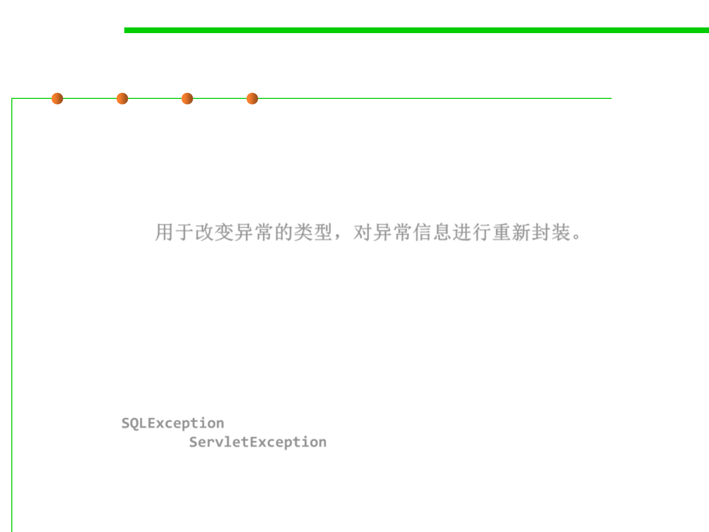

7.2 Error and Exception Handling
Rethrowing and Chaining Exceptions
▪ You can throw an exception in a catch clause.
▪ Typically, you do this when you want to change the exception type.
If you build a subsystem that other programmers use, it makes a
lot of sense to use an exception type that indicates a failure of the
subsystem. 用于改变异常的类型，对异常信息进行重新封装。
– E.g., ServletException, the code that executes a servlet may not want to
know in minute detail what went wrong in the servlet, but it definitely
wants to know that the servlet was at fault.
▪ Here is how you can catch an exception and rethrow it:
try {
access the database
}
catch (SQLException e) {
throw new ServletException("database error: " + e.getMessage());
}
▪ Here, the ServletException is constructed with the message text
of the exception.